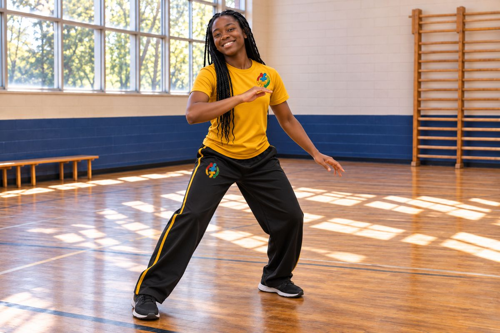

Louisiana · Independent private education
Legal & Professional Standards
A detailed reference for the people who teach, lead, support, and safeguard the Aberewa school community.
Private secondary school framework · 35 topics · Research updated November 13, 2026
Read the framework
Status matters. Aberewa is in development. Legal requirements depend on the actual school category, funding, placement arrangements, activities, and location. Planned school practices are labeled; this page does not establish government approval or replace adopted agreements and policies.
Start with the school model and approval categories, then use the topic index or search. Linked primary sources appear with the relevant topic and in the reference directory. “Planned” means the procedure must still be completed, adopted, and put into practice.
1. Private-school model and legal status
Aberewa Middle School is being developed as an independent private school in Louisiana, with a proposed secondary expansion. It is not being presented here as a public or charter school. The school’s name does not determine which grades it may lawfully serve; grade offerings, reporting, staffing, and any approvals must match the actual program.
This is a research-based legal and policy framework, not an executed employee contract or a representation that the school is already open, accredited, state approved, tax exempt, or approved to issue a particular diploma. Those statuses require separate evidence. The school must publish its actual operating category and current approvals before accepting enrollment or making credential promises.
Public-school tenure, district pay schedules, public employee procedures, and every public-school statute do not automatically transfer to an independent private school. Conversely, private status does not remove criminal law, child protection, civil rights, wage obligations, building rules, or contractual duties.
Authority and further reading: Louisiana Department of Education: nonpublic school categories · R.S. 17:236: school definition and staffing
2. State approval, registration, accreditation, and funding
| Category | Meaning for school operations |
|---|---|
| Nonpublic school seeking / holding BESE approval | Follow applicable nonpublic approval standards and the current application, renewal, enrollment, and reporting process. Include every grade and program in the approval submission. |
| Nonpublic school not seeking state approval | Annual enrollment reporting is still required. An attendance confirmation is not accreditation, BESE approval, or proof that all compulsory-attendance duties have been satisfied. |
| Independent accreditation | An accrediting organization’s separate quality review. It must not be advertised as identical to state approval. |
| Funding or scholarship participation | Participation may add eligibility, assessment, financial, staffing, nondiscrimination, audit, or reporting conditions. Approval alone does not guarantee funding. |
LDOE distinguishes registration from approval and does not itself accredit K–12 private schools. The governing body must identify each funding stream and its legal conditions before accepting it. Student services supplied by a public agency are not always equivalent to the private school receiving federal financial assistance.
Administrative record: Maintain the approval letter, grade range, reporting confirmations, accreditation evidence if any, inspection reports, program agreements, and renewal calendar. Website statements must match these records.
Authority and further reading: Louisiana Department of Education: nonpublic school categories · LDOE: schools not seeking state approval · LDOE: nonpublic approval documentation checklist · U.S. Department of Education: nonpublic education FAQ
3. Governing authority, entity, and financial responsibility
The governing body should formally establish the school, its mission, decision-making authority, and authority to hire, contract, admit students, award credit, and approve policies. Maintain bylaws or operating documents, meeting records, conflicts disclosures, a registered agent, required entity filings, and clearly delegated spending authority.
Louisiana nonprofit incorporation, federal 501(c)(3) recognition, state school approval, and accreditation are separate processes. Do not describe gifts as tax deductible solely because an entity is nonprofit. A tax-exempt private school has additional racial nondiscrimination, publicity, recordkeeping, and annual certification obligations.
Planned controls: Written budget approval, separation of payment and reconciliation duties, payroll and tax compliance, restricted-gift tracking, purchasing records, related-party review, and a closure / records-custody plan. Outside professionals should confirm tax treatment, payroll registration, insurance, and reporting before operations begin.
Authority and further reading: Louisiana Secretary of State: business filing duties · IRS Publication 557: tax-exempt private schools · Bulletin 741 Nonpublic: LAC 28:LXXIX
4. Teaching qualifications and degree minimums
Aberewa’s intended minimum: Every classroom teacher must hold at least a bachelor’s degree. A degree in education or the assigned subject—such as mathematics, English, science, or civics—is preferred. A diploma or GED alone qualifies an applicant for consideration for support roles only, subject to the requirements of that role. It does not qualify a person to become the independent teacher of record.
R.S. 17:236 differentiates schools receiving public funds or support, directly or indirectly, from schools receiving none. A school without such support may prescribe its instructional qualifications, but its chosen approval status and other applicable duties still matter.
For the Bulletin 741 Nonpublic instructional-staff route, §303 identifies alternatives: a valid Louisiana certificate for the assignment; a qualifying accredited bachelor’s degree with a major or equivalent in the assignment plus 12 semester hours in learner / learning-environment coursework, with a three-year completion period for a beginning teacher; or the applicable Nonpublic Temporary Teaching Authorization route. A bachelor’s degree by itself is not the entire approved-school qualification. The rule also treats self-contained grades 1–8 and out-of-field assignments separately.
The generic Teaching Authorization (TA) was discontinued in 2023. It must not be confused with the NTTA described in the nonpublic bulletin. Verify the currently available route directly with LDOE before relying on an authorization.
Appointment record: Verify the degree, institution, transcript, content preparation, assignment, required coursework, credentials, screening, and any applicable deadlines. An internal job title cannot override these requirements.
Authority and further reading: R.S. 17:236: school definition and staffing · Bulletin 741 Nonpublic: LAC 28:LXXIX · LDOE: discontinued Teaching Authorization notice
5. Internal education, assessment, and school-issued credentials
Aberewa’s proposed first tier is a rigorous yearlong evaluation and development period. Staff will complete online module cohorts with scores of 80% or higher, required online mathematics and science classes through the school’s dedicated training website, observed instruction, supervised practice, feedback, and a documented final review.
The training plan should publish module objectives, assessment rules, retake limits, integrity requirements, observation criteria, accommodation procedures, remediation, evaluator qualifications, appeal arrangements, and records of completion. Required training must be incorporated into lawful pay and working-time arrangements.
A school-issued completion certificate documents internal preparation. It is not a Louisiana teaching license, BESE approval, university semester credit, or a credential portable to another employer unless the relevant authority has expressly recognized it. An 80% module score does not replace screening, student-safety training, degree verification, or an externally required qualification.
Recognition of this pathway as a Louisiana certification pathway remains a long-term development objective. It would require the applicable state approval or rulemaking process. No statewide recognition is claimed on this page.
Authority and further reading: Bulletin 741 Nonpublic: LAC 28:LXXIX · LDOE: discontinued Teaching Authorization notice · BESE: current rulemaking docket · U.S. DOL: professional and teacher exemptions
6. School leadership, support roles, and licensed services
Under the nonpublic approval framework, §301 requires the principal, assistant principal, or headmaster to meet its graduate-degree or principalship credential standard; the principal is a full-time, on-site employee. Verify the exact applicable qualification before appointment rather than extending the classroom-teacher bachelor’s minimum to every leadership role.
Planned role boundaries: Support staff may assist with materials, supervision, documentation, and authorized instructional support under a qualified supervisor. Their job descriptions must identify duties they may perform and tasks reserved for the teacher, administrator, nurse, therapist, counselor, or other professional.
An internal certificate cannot authorize nursing, psychological practice, occupational or physical therapy, speech-language pathology, clinical counseling, or another regulated service. Confirm Louisiana licensing-board requirements and any student-specific supervision or delegation rules. Contracting for a service does not eliminate the school’s duty to verify credentials, insurance, scope, and child-safety screening.
Authority and further reading: Bulletin 741 Nonpublic: LAC 28:LXXIX · R.S. 17:15: criminal history and employment restrictions
7. Criminal-history checks, registry clearances, and references
Louisiana employment restrictions apply to nonpublic schools. LDOE’s current guidance calls for fingerprint-based criminal-history screening through the Louisiana State Police and a separate DCFS State Central Registry clearance through CANS for new hires. A commercial name search alone does not replace the required state process.
The review must cover relevant administrators, teachers, substitutes, temporary and part-time workers, support staff, and covered contracted personnel. DCFS requires approved school requesters to use the EdLink credentialing process. A person’s prior teaching credential or another employer’s background report should not be treated as a blanket waiver of the separate registry check.
Planned hiring controls: Written conditional offers; identity and employment-history verification; reference checks addressing conduct and student safety; confirmation of clearance before the permitted assignment; secure handling of results; and a documented response to disqualifying findings. Volunteer access and guest instructors also require a risk-based screening and supervision process.
If a consumer-reporting company is used in addition to the required state checks, follow applicable FCRA disclosure, written authorization, pre-adverse-action, and adverse-action procedures. Applicants must receive the required opportunity and information to challenge report errors. FTC employer guidance explains these steps.
R.S. 17:15 includes employee reporting duties for qualifying convictions, pleas, and registry recordation, including two-business-day deadlines in specified circumstances. Staff must promptly use the designated compliance route; a private promise of confidentiality cannot cancel statutory reporting.
Authority and further reading: R.S. 17:15: criminal history and employment restrictions · LDOE July 21, 2026: criminal and registry screening · DCFS: school employee registry clearances
8. Child abuse and neglect: immediate external reporting
Reporting to a supervisor is not a substitute for reporting to the legally designated authority. Louisiana Children’s Code Article 610 requires immediate reporting of suspected abuse or neglect. The reporting route depends on the alleged perpetrator and circumstances: specified caretaker / household situations go to DCFS; allegations involving school personnel and other listed situations go to local or state law enforcement. Dual reporting is permitted, and special provisions address trafficking.
The current statute separately requires a school to report alleged abuse occurring in a school setting immediately to parents or guardians and local or state law enforcement, regardless of the alleged perpetrator. Staff must not wait for an internal investigation or administrative permission. Preserve the child’s exact words, objective observations, dates, and the reporting record; do not conduct a coercive interview or promise secrecy.
For immediate danger, call 911. The DCFS child-abuse reporting hotline is 1-855-452-5437. Follow DCFS instructions for the appropriate reporting method and required written follow-up. The website clarification form is not an abuse-reporting channel or emergency service.
School procedures must prohibit obstruction and retaliation, protect the child from continued exposure, preserve evidence, and coordinate the legally required notifications without compromising an official investigation.
Authority and further reading: Children’s Code Article 610: reporting procedure · DCFS: mandated reporter instructions
9. Mandatory training and compliance records
Children’s Code Article 603.1(B) requires covered teaching or child-care providers to complete DCFS online training between June 1 and August 31 annually and provide completion records to each employing entity. The employing entity must submit its compliance list to LDOE by September 30. These are different deadlines; September 30 must not be used as the general statutory training deadline.
Planned additional orientation: Professional boundaries, reporting routes, emergency response, disability access, confidential records, harassment prevention, behavior support, medication procedures, online safety, field trips, Capoeira Angola safety, and job-specific equipment or laboratory risks. Confirm which additional trainings are mandatory for the school’s legal category and funding programs.
Maintain a training register showing the responsible person, course provider, completion date, expiration date, attendance evidence, assessment result where relevant, and the next renewal. Internal module completion does not excuse annual training required by law.
Authority and further reading: Children’s Code Article 603.1: required annual training · Bulletin 741 Nonpublic: LAC 28:LXXIX
10. Employment agreements, evaluation, and separation
Before employment begins, provide a written appointment or agreement identifying the employer, position, duties, salary or hourly rate, work schedule, term if any, reporting line, required training, screening conditions, leave provisions, and separation terms. Distinguish an at-will appointment from a fixed-term contract; the handbook should not make promises inconsistent with the signed agreement.
A yearlong first-tier evaluation is an assessment period, not a waiver of employment rights. Performance measures should address preparation, content knowledge, accessible teaching, supervision, documentation, ethical conduct, collaboration, and student progress. Record evidence, feedback, support, improvement expectations, and review decisions.
Private-school employment does not automatically confer public-school tenure. Nevertheless, discrimination, retaliation, unpaid wages, breach of contract, and other unlawful practices remain actionable. A serious safety concern may require immediate protective action rather than completing ordinary progressive steps.
Louisiana final-pay law generally uses the next regular payday or 15 days following discharge or resignation, whichever comes first. Review earned vacation, lawful deductions, disputed sums, records, and contract terms before processing final pay.
Authority and further reading: R.S. 23:631: payment following separation · EEOC: private-employer coverage
11. Wages, working time, and employee classification
Elementary and secondary schools are a covered enterprise category under the Fair Labor Standards Act. Nonprofit status does not by itself remove wage obligations. Classify each position by actual duties, not by a title or the possession of a degree.
A bona fide teacher whose primary duty is teaching at a qualifying educational establishment may fall within the teacher exemption. The salary-level and salary-basis tests do not apply to that specific exemption. Paraprofessionals, office staff, aides, custodians, and other support workers are not automatically exempt because they work at a school.
Planned payroll controls: Written classifications; accurate nonexempt time records; payment for compensable required training and work; overtime review; lawful deductions; and a process for correcting payroll errors. Do not use off-the-clock preparation, mandatory unpaid modules, or a nominal contractor label to avoid wage rules. Contractor status requires its own legal analysis.
Authority and further reading: U.S. DOL: FLSA school coverage · U.S. DOL: professional and teacher exemptions
12. Equal employment opportunity and workplace accommodations
Federal private-employer discrimination coverage depends in part on headcount and statutory counting rules. EEOC identifies a general 15-employee threshold for Title VII / ADA / GINA coverage and a 20-employee threshold for age discrimination coverage, with applicable calendar-week requirements. Equal Pay Act coverage is broader. Louisiana and local laws, contractual rights, and other federal protections may apply separately.
Planned Aberewa standard: Recruitment, assignments, pay, training, promotion, evaluation, and separation should be based on lawful job criteria. Provide a process for requesting disability, religious, pregnancy-related, and other legally required accommodations. Keep medical material separate from ordinary personnel files and limit access.
Provide more than one reporting route for harassment, discrimination, safety concerns, or retaliation, including a route outside a supervisor accused of misconduct. Investigate fairly, preserve records, and state that reporting to government agencies remains available. Internal complaint procedures must not be described as eliminating external deadlines or remedies.
Authority and further reading: EEOC: private-employer coverage · 42 U.S.C. 1981: equal contractual rights
13. Leave, benefits, hiring documentation, and unemployment
Private elementary and secondary schools are covered FMLA employers regardless of headcount. Individual eligibility still ordinarily requires 12 months of employment, 1,250 hours of service, and 50 employees within 75 miles. Special rules apply to certain instructional employees. A small school must not simply announce that FMLA can never apply.
Publish actual leave and benefits rather than implying that public-school retirement, district insurance, or district leave automatically applies. Review applicable military leave, pregnancy and lactation protections, workers’ compensation leave, and benefit-plan requirements.
Complete Form I-9 and employment eligibility verification using current USCIS rules and permissible documents. Maintain payroll and tax records and required notices. Nonprofit status does not automatically eliminate Louisiana unemployment obligations; determine liability and any permitted reimbursement election with the state before payroll begins.
Authority and further reading: U.S. DOL: school employees and FMLA · USCIS: Form I-9 requirements · Louisiana Works: unemployment employer guidelines
14. Specialized admissions and educational fit
A private school may design a specialized educational program. An IEP-centered or neurodivergent-centered mission is not, by itself, a blanket exemption from civil rights requirements. An “IEP-only” admission condition needs review against the actual program, applicable funding rules, disability law, and how families obtain evaluations.
Planned admissions process: Consider educational needs, essential program requirements, available services, existing evaluation information, reasonable accommodations, and the school’s documented capacity through an individualized review. A diagnosis, mobility limitation, or assistive device alone must not determine admission. Avoid stereotypes that equate a disability with dangerousness.
State clearly what information is requested, who decides, how accommodations are considered, what services are included in tuition, and how a family can request reconsideration. Do not collect detailed medical or IEP records through the general clarification form. Protect applicant information and communicate decisions respectfully.
An admission agreement must accurately describe the program the school can provide. It must not promise every service in a prior public-school IEP without a separate service and legal review.
Authority and further reading: DOJ: ADA Title III regulations · 34 CFR 104.39: private education · U.S. Department of Education: private placement and IDEA
15. Disability access and physical accessibility
A nonreligious private school generally is a Title III public accommodation. Applicable duties include reasonable policy modifications, effective communication, auxiliary aids where required, and accessibility obligations for facilities. The standards for existing-barrier removal differ from those for new construction and alterations.
There is no general one-year grace period allowing a new private school to exclude students with physical disabilities. Existing barriers require a readily-achievable analysis; new construction and alterations have their own accessibility rules. A limited budget must be evaluated under the actual legal standard rather than treated as an automatic exemption.
Before opening, assess entrances, routes, classrooms, restrooms, emergency evacuation, outdoor areas, parking / drop-off, communications, and activities. Document feasible modifications and alternatives, responsible staff, deadlines, and resources. Leasing a building does not erase access duties, and renting church space does not automatically make a nonreligious school exempt.
Any direct-threat or fundamental-alteration decision must use the applicable individualized, evidence-based standard. A broad “no physical disabilities” rule is not an acceptable substitute. Accessible websites and instructional materials also belong in the access review.
Authority and further reading: DOJ: ADA Title III regulations · DOJ: private schools as public accommodations
16. IEPs, equitable services, and public-agency placements
| Arrangement | Practical distinction |
|---|---|
| Parent chooses private enrollment | The child does not have an individual IDEA entitlement to all public-school services at the private school. The local educational agency has child-find and equitable-services responsibilities under the applicable rules. A selected child may receive a services plan. |
| Public agency places the child | IDEA FAPE and IEP responsibilities remain, with responsibilities and delivery documented in the placement arrangements. The school must satisfy applicable placement and approval conditions. |
| Parent seeks reimbursement for unilateral placement | This is a separate legal dispute with specific standards and procedures. Private admission does not promise reimbursement. |
| Aberewa individualized learning / service agreement | A school document specifying its own commitments. It must not be mislabeled as a public-agency IEP or an IDEA services plan. |
Coordinate with the appropriate LEA, obtain lawful consent for records and consultation, and explain service availability before enrollment. An April Dunn Act graduation pathway or other public-school exception must not be assumed to transfer automatically to a privately issued diploma.
Authority and further reading: U.S. Department of Education: private placement and IDEA · U.S. Department of Education: nonpublic education FAQ
17. Section 504, Title VI, Title IX, and funding conditions
Section 504 applies to covered recipients of federal financial assistance. Its private-school regulation, 34 CFR 104.39, differs from the public-school FAPE framework: it addresses qualified students, minor adjustments, certain additional charges, and duties of covered private special-education providers.
A covered private school may not exclude a qualified student who can receive an appropriate education within its program with minor adjustments. Additional disability-related charges require justification by a substantial increase in cost under the regulation. Covered private special-education providers also have its referenced evaluation and procedural duties. ADA Title III separately prohibits surcharges for required access measures; the Section 504 provision does not authorize an otherwise prohibited ADA surcharge.
Title VI, Title IX, grant assurances, and program-specific civil rights duties require a separate coverage review. Receiving publicly arranged equitable services for students does not necessarily make the private school itself a recipient of federal financial assistance. Likewise, state scholarship participation should not be casually described as the same thing as federal recipient status.
Planned compliance record: For each funding or placement arrangement, identify the recipient, governing rules, required coordinator or grievance procedure, notices, access protections, recordkeeping, complaint authority, and reporting duties. Review changes before signing a new agreement. The absence of one funding-triggered law does not eliminate other applicable civil rights protections.
Authority and further reading: 34 CFR 104.39: private education · U.S. Department of Education: nonpublic education FAQ
18. Cultural identity and nondiscrimination
Aberewa’s Akan-rooted and African-centered curriculum can coexist with a student body that is predominantly Black and with lawful access for students of every race. Cultural focus is not a license for racially restrictive admission, unequal contractual rights, or racial discrimination in employment.
Section 1981 protects equal contractual rights. Tax-exempt private schools also must satisfy IRS racial nondiscrimination requirements, including appropriate policy publication, records, and annual certification. Brumfield v. Dodd and funding-program requirements must be addressed where applicable.
Planned school standard: Recruitment and admissions materials should welcome qualified applicants of all races, colors, and national or ethnic origins. Apply the same published academic and service-review process. Cultural learning, uniforms, language study, and school events must be administered consistently with applicable disability, religious, and other civil rights duties.
Authority and further reading: 42 U.S.C. 1981: equal contractual rights · IRS Publication 557: tax-exempt private schools · Louisiana Department of Education: nonpublic school categories
19. Instructional calendar and attendance
The calendar must match the school’s legal category and actual instruction. Bulletin 741 Nonpublic §117 uses 57,750 annual instructional minutes, excluding such periods as lunch, recess, passing time, and parent conferences. A four-grade program cannot treat two years as four years of attendance merely by changing grade labels.
Do not quote the 180-day language in R.S. 17:236(A) without reading subsection B and current guidance. The statute contains a qualification concerning that provision, and LDOE guidance and BESE rules must be checked for the chosen category. Obtain written clarification before adopting an unusual or accelerated calendar.
Planned records: Published session dates, actual daily attendance, instructional minutes, excused / unexcused absence procedures, withdrawal notices, compulsory-attendance reporting, make-up instruction, remote participation standards, and a process for attendance concerns. Annual enrollment reporting is not a substitute for daily records or actual instruction.
Authority and further reading: R.S. 17:236: school definition and staffing · Bulletin 741 Nonpublic: LAC 28:LXXIX · LDOE: schools not seeking state approval
20. Proposed two-year high-school pathway
The proposed secondary track would organize grades 9–10 in Year One and grades 11–12 in Year Two. This describes an accelerated instructional design, not an automatic legal exemption from course, credit, graduation, attendance, assessment, or approval requirements.
For applicable approved-school credit rules, §2102 distinguishes time-based Carnegie credit from demonstrated proficiency. Time-based credit generally requires 7,965 scheduled instructional minutes and 7,515 attendance minutes per unit. Proficiency credit requires the specified assessment or portfolio information to be supplied to LDOE and properly recorded. General calendar compliance and valid course credit are separate questions.
Required development work: Build a student-by-student graduation audit; map every course to the correct code and content; document prerequisites and laboratory work; specify the assessment and mastery evidence; establish accessible instruction and reassessment; and verify health / PE, electives, and any cohort-specific requirements. Do not double-count the same work under different course names.
Credit recovery is for previously attempted, failed courses; it is not a general name for compressing four new grades. LDOE must confirm how the proposed structure fits the applicable approval and diploma rules, including the approved-school four-year course-of-study provisions. No promise that every student will finish in two years is appropriate.
Authority and further reading: Bulletin 741 Nonpublic: LAC 28:LXXIX · LDOE: nonpublic approval documentation checklist
21. Diplomas, transcripts, transfer credit, and TOPS
Publish the exact diploma and credit model before enrollment. Distinguish a diploma from a certificate of completion, and distinguish a school-issued diploma from a state-recognized pathway. A professional-looking transcript does not itself establish approval, equivalency, transfer acceptance, or scholarship eligibility.
LDOE warns that students in nonpublic schools not seeking state approval are not eligible for TOPS through that school category and do not receive a diploma with the same weight as a state-issued diploma. Do not advertise otherwise. Approved-school graduates still must satisfy applicable individual TOPS conditions; school approval alone does not guarantee an award.
Planned records: Course title and code, actual credit method, grade, dates, transfer evaluation, retained proficiency evidence, diploma audit, authorized signature, corrections log, secure record requests, and permanent transcript custody. Explain that colleges, receiving schools, employers, military programs, and athletic organizations make their own acceptance decisions.
Authority and further reading: LDOE: schools not seeking state approval · Louisiana Department of Education: nonpublic school categories · Bulletin 741 Nonpublic: LAC 28:LXXIX
22. Assessment integrity and instructional accountability
Teachers must use assessments that measure the stated content and distinguish accommodations from changes to the assessed standard. Keep student work, rubrics, feedback, scoring decisions, reteaching records, and evidence supporting awarded credit. A short website quiz is not automatically adequate proof of an entire high-school course.
The school’s internal 80% staff-module threshold is not a statewide student passing rule or a substitute for diploma requirements. Student grading and reassessment rules must be separately published. Accessibility should permit a student to demonstrate learning without concealing missing essential knowledge.
Use documented procedures for suspected cheating, grade changes, conflicts of interest, assessment security, and academic appeals. Staff must never fabricate attendance, backdate services, alter student evidence to imply work occurred, or represent unearned credit as completed instruction.
Authority and further reading: Bulletin 741 Nonpublic: LAC 28:LXXIX · R.S. 17:15: criminal history and employment restrictions
23. Behavior support, discipline, restraint, and seclusion
Planned Aberewa approach: Explicit expectations, predictable routines, communication supports, sensory access, de-escalation, individualized intervention, and factual behavior documentation. Disciplinary procedures should consider disability-related needs and provide a clear route for families to request review.
The proposed school policy prohibits corporal punishment and the use of restraint or seclusion as punishment, convenience, coercion, or a replacement for adequate staffing. Emergency interventions require an approved protocol, trained personnel, immediate safety monitoring, medical evaluation when indicated, prompt parent communication, and incident review.
R.S. 17:416.21 includes provisions specifically addressed to public-school authorities. Its entire procedure must not be copied and labeled automatically applicable to every private placement. Determine the exact binding requirements from the school’s category, placement contracts, and other law; apply school safeguards in addition.
An unlocked, voluntarily used calming space is different from involuntary confinement. Calling a locked space a “sensory room” does not change what occurred. Review every serious incident for preventable triggers, injury, lawful reporting, staffing, and changes to support.
Authority and further reading: R.S. 17:416.21: restraint and seclusion; scope matters · Bulletin 741 Nonpublic: LAC 28:LXXIX · DOJ: ADA Title III regulations
24. Professional boundaries, bullying, and complaints
Provide written rules on staff–student communication, approved messaging channels, one-to-one meetings, physical contact, gifts, photographs, transportation, off-campus contact, social media, tutoring, and conflicts of interest. School access must never be used to establish a sexual, exploitative, or secretive relationship with a student.
Maintain harassment, bullying, and cyberbullying policies with accessible reporting options, protection against retaliation, prompt safety measures, impartial review, and documented resolution. Online and off-campus behavior may require attention when it affects school safety or access, subject to applicable law and the school’s agreements.
Publish administrative and governing-body escalation routes before operations begin. Do not promise absolute confidentiality; explain limited, need-to-know disclosure and mandatory external reporting. The clarification form can receive policy questions, but urgent threats, abuse, or medical emergencies require the designated emergency or statutory reporting route.
Authority and further reading: Children’s Code Article 610: reporting procedure · Bulletin 741 Nonpublic: LAC 28:LXXIX
25. Student and personnel records; FERPA distinctions
FERPA applies to institutions receiving funds under programs administered by the U.S. Department of Education. The Department explains that private K–12 schools generally do not receive those funds and generally are not subject to FERPA. Do not claim that every private school is automatically covered, or treat lack of FERPA coverage as permission to disclose records freely.
Planned records standard: Role-based access, secure storage, access logs where appropriate, consent procedures, verified parent / guardian authority, record correction requests, retention and destruction schedules, vendor agreements, breach response, and protected transmission. Separate student educational records, medical information, personnel files, and screening results as appropriate.
Determine applicable Louisiana requirements, placement / funding conditions, subpoena procedures, and contractual commitments before releasing records. Identify who controls access when a student reaches the relevant legal age. Confidential IEPs, diagnoses, evaluations, and personnel documents do not belong in general website questions or public dashboards.
Authority and further reading: U.S. Department of Education: FERPA coverage · Bulletin 741 Nonpublic: LAC 28:LXXIX
26. Website accounts, educational technology, AI, and media
Use approved systems and minimum necessary information. Staff should not enter identifiable student records into public AI tools, personal cloud accounts, or unapproved websites. Review vendors for security, retention, deletion, advertising, account access, and whether children’s data may be used beyond the educational purpose.
COPPA has specific rules for covered online services collecting information from children under 13. School authorization for an educational use is not a blanket authorization for commercial profiling or unrelated data use. Review the current FTC rule and any required parent notice or consent before adopting a service.
Obtain appropriate consent for publishing identifiable student photographs, artwork, recordings, or stories, and distinguish internal classroom use from public marketing. Respect copyright, licenses, and creator attribution. Clearly identify illustrative or generated imagery when needed to avoid implying that pictured students are actually enrolled.
School website inquiries and replies use private accounts. The form is for clarification and general access concerns, not confidential student-record submission. Follow the separate website privacy notice.
Authority and further reading: FTC: COPPA and school technology · U.S. Department of Education: FERPA coverage
27. Health records, medication, immunization, and emergencies
Before attendance, establish emergency contacts, authorized pickup, health information access, medication orders / permissions, storage, administration logs, and student-specific emergency plans. Verify nursing and delegation rules before assigning medical tasks to support staff.
R.S. 17:170 addresses immunization documentation, exemptions, required notices, vaccination-status nondiscrimination, and OPH-recommended outbreak exclusions. It prohibits requiring a COVID-19 vaccine for enrollment or attendance. Because communications about its requirements must include the exemption text and citation, that text is reproduced here:
“No person attending or seeking to enter any school or facility enumerated in Subsection A of this Section shall be required to comply with the provisions of this Section, including any additional immunization or proof of immunity requirement adopted pursuant to the provisions of this Section, if the person is a distance learner or if the person or his parent or guardian submits either a written statement from a physician stating that the procedure is contraindicated for medical reasons or a written dissent from the student or his parent or guardian.”
R.S. 17:170(E)(1).
Planned response protocols: Diabetes, seizures, severe allergies, injuries, infection control, emergency medication, ambulance access, and family notification. Do not promise continuous nursing or clinical services before personnel and resources are confirmed.
Authority and further reading: R.S. 17:170: immunization, exemptions, and notices · Bulletin 741 Nonpublic: LAC 28:LXXIX
28. Facility approval, maintenance, and workplace safety
A lease is not permission to operate a school. Confirm zoning and permitted use, occupancy classification, required permits, fire and life safety, health inspections, and accessibility with the authorities having jurisdiction. The current BESE approval checklist calls for applicable fire-marshal and health / building / cafeteria inspection evidence.
Planned maintenance system: Preventive inspection of exits, alarms, extinguishers, doors, electrical systems, HVAC, plumbing, drinking water, lighting, floors, pests, cleaning chemicals, laboratory materials, equipment, and activity areas. Keep inspection records, corrective work orders, contractor credentials, and proof that hazardous areas remain closed until safe.
Louisiana private-sector schools fall within federal OSHA jurisdiction. Provide job-specific training, safe chemical handling, protective equipment where needed, injury reporting, and procedures for staff exposure or workplace hazards. “School employee” is not a general exemption from workplace safety rules.
Budget for repairs, utilities, inspections, accessibility work, and reserves. Deferred maintenance must not become a substitute for meeting safety and access duties.
Authority and further reading: LDOE: nonpublic approval documentation checklist · OSHA: state plans and federal jurisdiction · DOJ: ADA Title III regulations
29. Emergency planning, closure, and continuity
Maintain written plans for fire, severe weather, hurricanes, evacuation, sheltering, medical emergencies, missing students, elopement, violence, reunification, utility failure, cyber incidents, and temporary closure. Assign decision authority, backups, emergency contacts, accessible evacuation assistance, and parent communication.
Practice procedures with accommodations for students’ communication, sensory, mobility, and emotional needs. Staff must know who supervises each student, who checks spaces, who brings essential medication or records, and how the school accounts for everyone after evacuation.
A continuity plan should identify accessible learning materials, connectivity alternatives, participation expectations, secure remote access, service limitations, and how instruction and attendance will be documented. Do not count unprovided instruction as completed time. A prolonged closure requires review of enrollment agreements, refund terms, payroll duties, insurance notices, and record transfer.
Authority and further reading: Bulletin 741 Nonpublic: LAC 28:LXXIX · DOJ: ADA Title III regulations · LDOE: nonpublic approval documentation checklist
30. Transportation, food service, visitors, and off-site activities
Transportation and meals should not be advertised as available until arrangements are confirmed. If provided, verify the applicable driver credentials, vehicle / school-bus standards, screening, inspection, insurance, accessibility, supervision, emergency procedures, and pickup / release authorization. A personal vehicle is not automatically an approved school transportation arrangement.
For meals, determine food permits, inspection, safe storage, allergy procedures, sanitation, staff training, and any nutrition-program rules. Contracted vendors require written responsibilities and verified compliance; a vendor’s involvement does not eliminate the school’s oversight.
Use visitor identification, controlled access, sign-in / sign-out, and supervision procedures. For trips and community instruction, document the educational purpose, risk review, consent, accommodations, staffing, transport, medical needs, emergency contacts, and insurance. Obtain approval before any private tutoring, off-site lesson, or student transport is treated as a school activity.
Authority and further reading: Bulletin 741 Nonpublic: LAC 28:LXXIX · R.S. 17:15: criminal history and employment restrictions · LDOE: nonpublic approval documentation checklist · DOJ: ADA Title III regulations
31. Capoeira Angola: the school’s only planned sport
Capoeira Angola will be Aberewa’s only planned sport. The program will be developed around its movement, music, roda, cultural learning, cooperation, and disciplined practice. It does not establish a separate interscholastic league, athletic association membership, or an approved PE-credit pathway by itself.
Planned instructor and participation standards: Document Capoeira Angola experience and teaching competence, child-safety screening, first aid / CPR preparation, supervision, safe surfaces and spacing, progressive instruction, clear stop signals, and individualized access. An outside instructor’s role must be distinguished from that of a qualified teacher awarding academic credit.
R.S. 17:440.3 addresses current CPR, first aid, and AED certification for high-school employees serving as coaches. The school must verify and maintain the applicable certifications, rather than treating attendance at an informal orientation as sufficient. Read the coach-certification statute.
Risk planning must address falls, head injuries, partner work, kicks, inversions, exertion, hydration, medical restrictions, instruments, and travel. Activities should be adapted to student readiness and disability-related needs. No learner should be required to attempt an unsafe movement to demonstrate belonging or earn participation.
Louisiana’s Youth Concussion Act includes public and nonpublic schools. Its education and signed information-sheet duties must be reviewed before participation; annual coach / official training provisions specifically address interscholastic activities. Aberewa’s planned standard is annual concussion training for all activity instructors regardless of whether competition is offered, removal for suspected concussion, parent / guardian notification, and written healthcare-provider clearance for a full or graduated return when concussion cannot be ruled out. The student must not participate in supervised exertional team activities before that clearance.
If the program requires regular training and competition, review the comprehensive sports-injury management requirements in R.S. 40:1087.1, including its scope and funding provisions. Establish the applicable emergency action, serious-injury removal, medical review, return, and family-information procedures. Read the sports-injury statute.
Obtain insurer confirmation that Capoeira Angola, including its martial-arts components and any demonstrations or off-site instruction, is covered. A generic school policy or signed waiver may not supply that coverage. If the program is used for PE credit, separately verify the applicable curriculum, instructor, instructional-time, assessment, and credit rules. Offering one sport does not cancel health or PE obligations.
Authority and further reading: R.S. 40:1089.3: youth concussion education · R.S. 40:1089.4: removal and return to play · Bulletin 741 Nonpublic: LAC 28:LXXIX · DOJ: ADA Title III regulations
32. Insurance and allocation of risk
Louisiana generally requires workers’ compensation coverage even for an employer with one employee, subject to specific exceptions. Determine the lawful coverage arrangement before staff begin work. Unemployment contributions or reimbursement are a separate employer obligation rather than a substitute insurance policy.
Broker review should address: General liability; educator professional liability / errors and omissions; abuse and molestation coverage; employment practices liability; directors and officers liability; property and equipment; business interruption / extra expense; cyber and privacy liability; commercial auto and hired / non-owned auto; student accident; umbrella / excess; crime / employee dishonesty; and flood / windstorm exposure appropriate to the site.
These are coverage categories to evaluate, not a claim that every listed policy is universally mandated by Louisiana law. Leases, financing, contracts, activities, and insurers can impose additional requirements. Examine exclusions, limits, deductibles, defense costs, retroactive dates, reporting windows, and who is insured.
Disclose special-education services, behavior interventions, Capoeira Angola, field trips, transportation, contractors, and online activities accurately. Obtain written confirmation of any necessary endorsements. Keep certificates, renewal dates, incident-report instructions, and claims notices. A waiver does not erase statutory duties or guarantee immunity.
Authority and further reading: Louisiana Works: workers’ compensation coverage · Louisiana Works: unemployment employer guidelines
33. Tuition, enrollment agreements, disclosures, and school closure
Before accepting payment, publish the actual tuition, fees, deposits, included services, extra charges, payment schedules, cancellation terms, refunds, withdrawal procedures, attendance expectations, discipline process, and any conditions on continuation. Avoid guarantees about opening dates, therapy availability, two-year graduation, transfer acceptance, public reimbursement, or scholarship eligibility that have not been established.
Family agreements should explain the school’s legal status, service limits, record access, complaint route, accommodations process, emergency procedures, and responsibilities if the student’s needs change. A contract cannot lawfully waive rights that are nonwaivable, authorize abuse, or eliminate mandatory reporting.
A closure plan should identify notice to families and staff, protection of student records, transfer assistance, permanent transcript custody, refund / creditor obligations, payroll and tax duties, and insurance notifications. Financial distress must not result in abandoned records or unsupported promises about completion.
Authority and further reading: Louisiana Department of Education: nonpublic school categories · LDOE: schools not seeking state approval · DOJ: ADA Title III regulations · R.S. 23:631: payment following separation
34. Documents required to put this framework into practice
This page is a reference framework. Before hiring or enrollment, complete and approve the operative documents below, identify who owns each one, and record the adoption and review dates.
| Document set | Required implementation work |
|---|---|
| Authority and status | Entity documents, governing resolutions, actual approval / registration evidence, grade offerings, funding conditions, and nondiscrimination notices. |
| Personnel | Job descriptions, qualification matrix, screening register, appointment agreements, handbook, payroll classifications, training calendar, evaluation tools, and complaint procedures. |
| Internal training | Yearlong first-tier syllabus, 80% module criteria, required mathematics and science coursework, observation rubrics, remediation, appeals, and accurately labeled school-issued certificates. |
| Admissions and support | Individualized review, accommodations process, service agreements, placement / LEA coordination, consent, tuition disclosures, and withdrawal / transfer procedures. |
| Academic records | Calendar, attendance, curriculum / course mapping, two-year pathway feasibility review, credit methods, assessments, transcripts, and diploma audit. |
| Protection and health | Reporting procedures, boundaries, bullying, behavior / emergency intervention safeguards, medication and health plans, incident forms, and annual training evidence. |
| Campus and activities | Occupancy and inspections, accessibility review, maintenance register, emergency / continuity plans, transport / meals, and Capoeira Angola risk and participation procedures. |
| Information and finance | Records retention, secure systems, vendor review, media permissions, budgets, payroll / tax controls, insurance, and closure / transcript-custody plans. |
Signing an acknowledgment records receipt of a policy; it does not establish that all required training, qualifications, or approvals have been completed.
35. Interpretation, legal updates, and clarification
This framework distinguishes generally applicable duties, status-dependent requirements, and planned Aberewa practices. It is not individualized legal advice, an exhaustive statement of every applicable rule, a finding of compliance, or a representation that an attorney or government agency has approved the school.
Statutes, regulations, emergency rules, funding agreements, court orders, local codes, and licensing-board requirements may overlap. The BESE policy PDF available during this research is dated December 2025; the current rulemaking docket also lists later actions. Proposed or projected rules must not be described as already effective without checking the final action and effective date.
Assign a compliance owner to review authoritative changes before opening, hiring, entering funding programs, changing grade offerings, awarding credit, or revising services. Keep a dated revision log, preserve earlier adopted versions, and obtain Louisiana education / employment counsel’s review of the actual operating model and agreements.
For a question about this framework or any school clarification, use the private clarification form. Do not include confidential student records. The form does not replace an official complaint, court filing, statutory report, or emergency call.
Authority and further reading: BESE: current rulemaking docket · Louisiana Department of Education: nonpublic school categories
Official reference directory
Sources checked for this framework on November 13, 2026. The linked text and its current effective dates control. A source may address a broader group of schools than Aberewa’s chosen category.
- Louisiana Department of Education: nonpublic school categories
- LDOE: schools not seeking state approval
- R.S. 17:236: school definition and staffing
- Bulletin 741 Nonpublic: LAC 28:LXXIX
- LDOE: nonpublic approval documentation checklist
- BESE: current rulemaking docket
- LDOE: discontinued Teaching Authorization notice
- R.S. 17:15: criminal history and employment restrictions
- LDOE July 21, 2026: criminal and registry screening
- DCFS: school employee registry clearances
- Children’s Code Article 610: reporting procedure
- Children’s Code Article 603.1: required annual training
- DCFS: mandated reporter instructions
- DOJ: ADA Title III regulations
- DOJ: private schools as public accommodations
- U.S. Department of Education: private placement and IDEA
- U.S. Department of Education: nonpublic education FAQ
- 34 CFR 104.39: private education
- U.S. Department of Education: FERPA coverage
- FTC: COPPA and school technology
- IRS Publication 557: tax-exempt private schools
- 42 U.S.C. 1981: equal contractual rights
- EEOC: private-employer coverage
- U.S. DOL: FLSA school coverage
- U.S. DOL: professional and teacher exemptions
- U.S. DOL: school employees and FMLA
- R.S. 23:631: payment following separation
- USCIS: Form I-9 requirements
- Louisiana Works: workers’ compensation coverage
- Louisiana Works: unemployment employer guidelines
- OSHA: state plans and federal jurisdiction
- R.S. 17:170: immunization, exemptions, and notices
- R.S. 17:416.21: restraint and seclusion; scope matters
- R.S. 40:1089.3: youth concussion education
- R.S. 40:1089.4: removal and return to play
- Louisiana Secretary of State: business filing duties
- FTC: employment consumer reports and FCRA
- R.S. 17:440.3: school coach certifications
- R.S. 40:1087.1: comprehensive sports-injury management

Movement · Music · Community
Capoeira Angola at Aberewa
The planned program requires appropriate supervision, accessible participation, clear family information, and review of applicable requirements before launch. Cultural inspiration does not establish endorsement or a formal relationship with a named mestre or organization.
Our schoolwide approach is inspired by Mestre Curtis Pierre’s work in New Orleans, with attention to fluid movement, balance, flexibility, music, and cultural history.